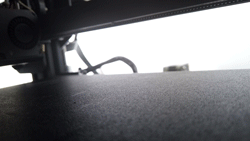
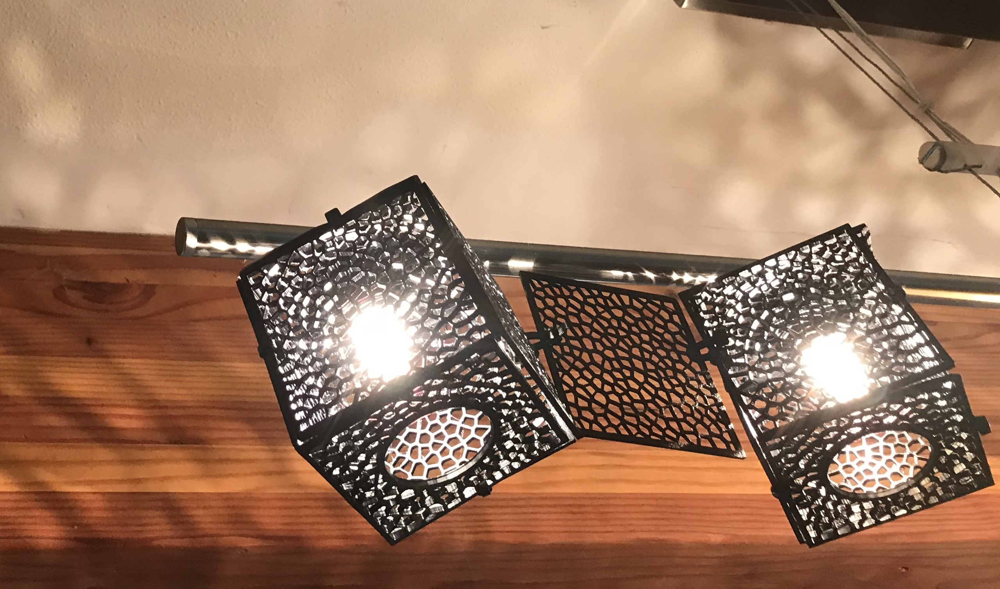

Prints and Prints and Prints!
So many prints! I made panels to soeed up the process. I jacked up my printer speed to 100mm/sec and layer height to .32. My printer kicked out 36 prints, one for each side of the cube for 6 lights. Each took about an hour.
Prototypes for Dramatic Shadows!
This is about prototyping small Vonorois to make shadows. I had to keep in mind that these bulbs run hot! The panels did cast shadows however the bulbs were too bright so the shadows were washed out. Also the bare halogen bulbs were harsh. Hmm, need a solution for that.
Cool Accident!

To prototype modifying the harsh halogen light, I printed the thinnest print that wouldn't break when pulling of the print bed. 1mm is the thinnest I could print with success. I printed the existing panel with a solid circle to help difuse the light. The red color was an uninteded yet turned out to be a happy accident of string light going through 1mm if black PLA.